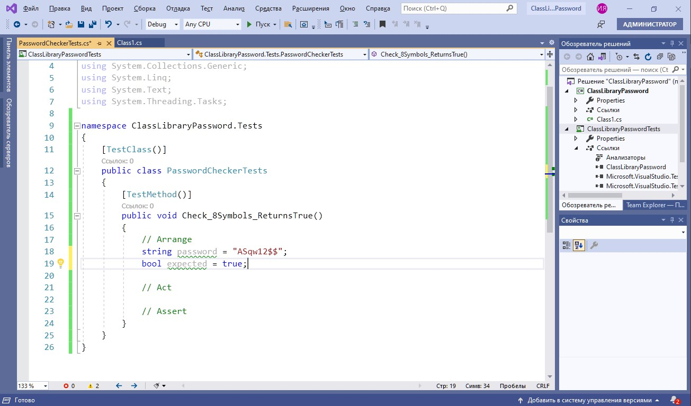

Основные темы цикла занятий
Несовершенное программное решение может оказать колоссальный эффект на генерацию доходов, надежность и репутацию в долгосрочной перспективе. Так, прежде чем доставить ПО клиенту, каждая компания должна гарантировать, что оно работает безупречно и соответствует всем спецификациям и требованиям. Поэтому тестирование уже сейчас становится неотъемлемой и значимой частью жизненного цикла разработки ПО. В этом нам поможет подход TDD (Test Driven Development) — разработка через тестирование. Основные принципы его применения:
- прежде чем писать код реализации некой возможности, пишут тест, который позволяет проверить, работает этот будущий код реализации или нет
- создают реализацию возможностей и добиваются того, чтобы она успешно прошла тестирование
- выполняют, если это нужно, рефакторинг кода (рефакторинг, который при наличии теста способен указать разработчику на правильность или неправильность работы системы, вселяет разработчику уверенность в его действиях)
Наша небольшая простая функция, которую мы будем тестировать, должна всего лишь проверять сложность пароля по следующим правилам:
- количество символов от 8 до 20
- наличие цифр
- наличие спецсимволов
- наличие прописных и строчных букв
Также нам представлен набор тестовых данных для проверки
1. Создаем библиотеку .NET Framework

2. Переименовываем стандартный класс в PasswordChecker
3. Затем создаем статичный метод ValidatePassword, а в теле метода пока просто возвращаем True
4. Затем создаем тестовый проект для этого метода (правой кнопкой мыши — Создание модульных тестов), где и будем создавать тесты
5. Есть очень хороший подход оформления тестов, который формулируется Arrange-Act-Assert. Суть его заключается в том, чтобы в модульном тесте четко определить:
- предусловие (блок Аrrange) — устанавливает начальные условия для выполнения теста
- действие (блок Act) — выполняет сам тест
- постусловие (блок Assert) — верифицирует результат теста, и, в данном случае, оформление — повышает читаемость текста и облегчает его использование в качестве документации к тестируемой функциональности
Например, напишем первый тест. Он будет проверять количество символов, где мы разместим блоки Arrange, Act и Assert

- Объявляем переменную для установки пароля из тестовых данных
- Здесь же объявляем ожидаемое значение в результате выполнения теста

- В блоке Act создаем переменную, которая вернет актуальный результат при выполнении метода CheckPassword. В нашем случае ValidatePassword
- С помощью класса Assert сравниваем два значения: ожидаемое и реальное, метод ArEquel, и в качестве аргумента — наши данные
Для проверки результата в классе Assert, помимо ArEquel, определен ряд методов, среди которых можно выделить, например, следующие: All, Matches, Empty, IsTrue, IsNull, Throws и другие
6. Давайте во втором тестовом методе воспользуемся классом IsFalse в блоке Assert
7. Запускаем тесты: на вкладке Тест можно открыть обозреватель тестов
8. С помощью команды "Выполнить все тесты в представлении" можно их запустить
9. Так как наша функция всегда возвращает True, первый метод проходит, а второй — нет
10. Обращаем ваше внимание на наименование тестовых методов. Имя теста должно состоять из трех частей:
- имя тестируемого метода
- сценарий, в котором выполняется тестирование
- ожидаемое поведение при вызове сценария
Например, в методе Check_4SymbolsReturnsFalse имя тестируемого метода находится в первой части названия — Check, затем идет сценарий — то, что у нас используется 4 символа, а затем ожидаемое поведение, у нас вернется False
11. Реализуем все остальные тестовые методы по аналогии, группируя их по требованиям к паролю. Пишем тестовый метод для проверки более чем 20 символов (в данном случае их будет 30)
12. Теперь, когда все тесты готовы, самое время приступить к написанию тела метода, проверяющего пароль
- Первым условием проверяем длину
- Запускаем тесты. Как видно, тесты на количество символов 30, 4 и 8 прошли
- Далее реализуем проверку строчных букв. Два теста на проверку нижнего регистра тоже пройдены
- Затем идет проверка заглавных букв. И они тоже оба пройдены
- Реализуем проверку цифр. Они тоже пройдены
- Реализуем проверку спецсимволов. Метод Intersect будет проверять вхождение спецсимволов в пароле
13. Мы обработали все требования и прошли все тесты
Итоги
Нам удалось наглядно продемонстрировать важность и пользу тестирования. Эта часть разработки программного обеспечения позволит вам создать наиболее стабильный и качественный продукт, а также выявить многие неисправности еще до стадии использования клиентами.